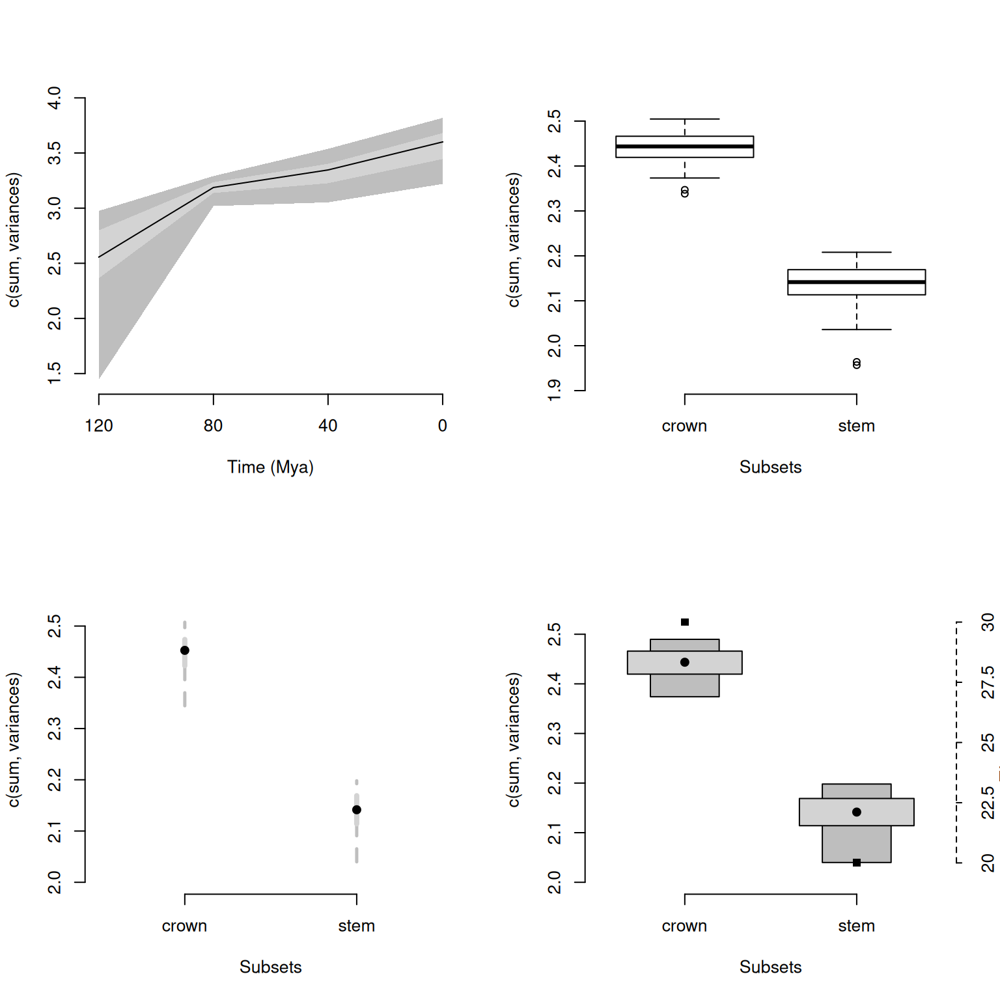

4 Details of specific functions
The following section contains information specific to some functions. If any of your questions are not covered in these sections, please refer to the function help files in R, send me an email (guillert@tcd.ie), or raise an issue on GitHub. The several tutorials below describe specific functionalities of certain functions; please always refer to the function help files for the full function documentation!
Before each section, make sure you loaded the Beck and Lee (2014) data (see example data for more details).
## Loading the data
data(BeckLee_mat50)
data(BeckLee_mat99)
data(BeckLee_tree)
data(BeckLee_ages)4.1 Time slicing
The function chrono.subsets allows users to divide the matrix into different time subsets or slices given a dated phylogeny that contains all the elements (i.e. taxa) from the matrix. Each subset generated by this function will then contain all the elements present at a specific point in time or during a specific period in time.
Two types of time subsets can be performed by using the method option:
- Discrete time subsets (or time-binning) using
method = discrete - Continuous time subsets (or time-slicing) using
method = continuous
For the time-slicing method details see T. Guillerme and Cooper (2018). For both methods, the function takes the time argument which can be a vector of numeric values for:
- Defining the boundaries of the time bins (when
method = discrete) - Defining the time slices (when
method = continuous)
Otherwise, the time argument can be set as a single numeric value for automatically generating a given number of equidistant time-bins/slices. Additionally, it is also possible to input a dataframe containing the first and last occurrence data (FAD/LAD) for taxa that span over a longer time than the given tips/nodes age, so taxa can appear in more than one time bin/slice.
Here is an example for method = discrete:
## Generating three time bins containing the taxa present every 40 Ma
chrono.subsets(data = BeckLee_mat50, tree = BeckLee_tree, method = "discrete",
time = c(120, 80, 40, 0))## ---- dispRity object ----
## 3 discrete time subsets for 50 elements:
## 120 - 80, 80 - 40, 40 - 0.Note that we can also generate equivalent results by just telling the function that we want three time-bins as follow:
## Automatically generate three equal length bins:
chrono.subsets(data = BeckLee_mat50, tree = BeckLee_tree, method = "discrete",
time = 3)## ---- dispRity object ----
## 3 discrete time subsets for 50 elements:
## 133.51104 - 89.00736, 89.00736 - 44.50368, 44.50368 - 0.In this example, the taxa were split inside each time-bin according to their age. However, the taxa here are considered as single points in time. It is totally possible that some taxa could have had longer longevity and that they exist in multiple time bins. In this case, it is possible to include them in more than one bin by providing a table of first and last occurrence dates (FAD/LAD). This table should have the taxa names as row names and two columns for respectively the first and last occurrence age:
## Displaying the table of first and last occurrence dates for each taxa
head(BeckLee_ages)## FAD LAD
## Adapis 37.2 36.8
## Asioryctes 83.6 72.1
## Leptictis 33.9 33.3
## Miacis 49.0 46.7
## Mimotona 61.6 59.2
## Notharctus 50.2 47.0## Generating time bins including taxa that might span between them
chrono.subsets(data = BeckLee_mat50, tree = BeckLee_tree, method = "discrete",
time = c(120, 80, 40, 0), FADLAD = BeckLee_ages)## ---- dispRity object ----
## 3 discrete time subsets for 50 elements:
## 120 - 80, 80 - 40, 40 - 0.When using this method, the oldest boundary of the first bin (or the first slice, see below) is automatically generated as the root age plus 1% of the tree length, as long as at least three elements/taxa are present at that point in time. The algorithm adds an extra 1% tree length until reaching the required minimum of three elements. It is also possible to include nodes in each bin by using inc.nodes = TRUE and providing a matrix that contains the ordinated distance among tips and nodes.
For the time-slicing method (method = continuous), the idea is fairly similar. This option, however, requires a matrix that contains the ordinated distance among taxa and nodes and an extra argument describing the assumed evolutionary model (via the model argument). This model argument is used when the time slice occurs along a branch of the tree rather than on a tip or a node, meaning that a decision must be made about what the value for the branch should be. The model can be one of the following:
- Punctuated models
acctranwhere the data chosen along the branch is always the one of the descendantdeltranwhere the data chosen along the branch is always the one of the ancestorrandomwhere the data chosen along the branch is randomly chosen between the descendant or the ancestorproximitywhere the data chosen along the branch is either the descendant or the ancestor depending on branch length- Gradual models
equal.splitwhere the data chosen along the branch is both the descendant and the ancestor with an even probabilitygradual.splitwhere the data chosen along the branch is both the descendant and the ancestor with a probability depending on branch length
Note that the four first models are a proxy for punctuated evolution: the selected data is always either the one of the descendant or the ancestor. In other words, changes along the branches always occur at either ends of it. The two last models are a proxy for gradual evolution: the data from both the descendant and the ancestor is used with an associate probability. These later models perform better when bootstrapped, effectively approximating the “intermediate” state between and the ancestor and the descendants.
## Generating four time slices every 40 million years under a model of proximity evolution
chrono.subsets(data = BeckLee_mat99, tree = BeckLee_tree,
method = "continuous", model = "proximity", time = c(120, 80, 40, 0),
FADLAD = BeckLee_ages)## ---- dispRity object ----
## 4 continuous (proximity) time subsets for 99 elements:
## 120, 80, 40, 0.## Generating four time slices automatically
chrono.subsets(data = BeckLee_mat99, tree = BeckLee_tree,
method = "continuous", model = "proximity", time = 4, FADLAD = BeckLee_ages)## ---- dispRity object ----
## 4 continuous (proximity) time subsets for 99 elements:
## 133.51104, 89.00736, 44.50368, 0.If you want to generate time subsets based on stratigraphy, the package proposes a useful functions to do it for you: get.bin.ages (check out the function’s manual in R)!
4.2 Customised subsets
Another way of separating elements into different categories is to use customised subsets as briefly explained above. This function simply takes the list of elements to put in each group (whether they are the actual element names or their position in the matrix).
## Creating the two groups (crown and stems)
mammal_groups <- crown.stem(BeckLee_tree, inc.nodes = FALSE)
## Separating the dataset into two different groups
custom.subsets(BeckLee_mat50, group = mammal_groups)## ---- dispRity object ----
## 2 customised subsets for 50 elements:
## crown, stem.Like in this example, you can use the utility function crown.stem that allows to automatically separate the crown and stems taxa given a phylogenetic tree. Also, elements can easily be assigned to different groups if necessary!
## Creating the three groups as a list
weird_groups <- list("even" = seq(from = 1, to = 49, by = 2),
"odd" = seq(from = 2, to = 50, by = 2),
"all" = c(1:50))The custom.subsets function can also take a phylogeny (as a phylo object) as an argument to create groups as clades:
## Creating groups as clades
custom.subsets(BeckLee_mat50, group = BeckLee_tree)This automatically creates 49 (the number of nodes) groups containing between two and 50 (the number of tips) elements.
4.3 Bootstraps and rarefactions
One important step in analysing ordinated matrices is to pseudo-replicate the data to see how robust the results are, and how sensitive they are to outliers in the dataset. This can be achieved using the function boot.matrix to bootstrap and/or rarefy the data. The default options will bootstrap the matrix 100 times without rarefaction using the “full” bootstrap method (see below):
## Default bootstrapping
boot.matrix(data = BeckLee_mat50)## ---- dispRity object ----
## 50 elements with 48 dimensions.
## Data was bootstrapped 100 times (method:"full").The number of bootstrap replicates can be defined using the bootstraps option. The method can be modified by controlling which bootstrap algorithm to use through the boot.type argument. Currently two algorithms are implemented:
fullwhere the bootstrapping is entirely stochastic (n elements are replaced by any m elements drawn from the data)singlewhere only one random element is replaced by one other random element for each pseudo-replicate
## Bootstrapping with the single bootstrap method
boot.matrix(BeckLee_mat50, boot.type = "single")## ---- dispRity object ----
## 50 elements with 48 dimensions.
## Data was bootstrapped 100 times (method:"single").This function also allows users to rarefy the data using the rarefaction argument. Rarefaction allows users to limit the number of elements to be drawn at each bootstrap replication. This is useful if, for example, one is interested in looking at the effect of reducing the number of elements on the results of an analysis.
This can be achieved by using the rarefaction option that draws only n-x at each bootstrap replicate (where x is the number of elements not sampled). The default argument is FALSE but it can be set to TRUE to fully rarefy the data (i.e. remove x elements for the number of pseudo-replicates, where x varies from the maximum number of elements present in each subset to a minimum of three elements). It can also be set to one or more numeric values to only rarefy to the corresponding number of elements.
## Bootstrapping with the full rarefaction
boot.matrix(BeckLee_mat50, bootstraps = 20, rarefaction = TRUE)## ---- dispRity object ----
## 50 elements with 48 dimensions.
## Data was bootstrapped 20 times (method:"full") and fully rarefied.## Or with a set number of rarefaction levels
boot.matrix(BeckLee_mat50, bootstraps = 20, rarefaction = c(6:8, 3))## ---- dispRity object ----
## 50 elements with 48 dimensions.
## Data was bootstrapped 20 times (method:"full") and rarefied to 6, 7, 8, 3 elements.One other argument is dimensions that specifies how many dimensions from the matrix should be used for further analysis. When missing, all dimensions from the ordinated matrix are used.
## Using the first 50% of the dimensions
boot.matrix(BeckLee_mat50, dimensions = 0.5)## ---- dispRity object ----
## 50 elements with 24 dimensions.
## Data was bootstrapped 100 times (method:"full").## Using the first 10 dimensions
boot.matrix(BeckLee_mat50, dimensions = 10)## ---- dispRity object ----
## 50 elements with 10 dimensions.
## Data was bootstrapped 100 times (method:"full").It is also possible to specify the sampling probability in the bootstrap for each elements. This can be useful for weighting analysis for example (i.e. giving more importance to specific elements). These probabilities can be passed to the prob argument individually with a vector with the elements names or with a matrix with the rownames as elements names. The elements with no specified probability will be assigned a probability of 1 (or 1/maximum weight if the argument is weights rather than probabilities).
## Attributing a weight of 0 to Cimolestes and 10 to Maelestes
boot.matrix(BeckLee_mat50, prob = c("Cimolestes" = 0, "Maelestes" = 10))## ---- dispRity object ----
## 50 elements with 48 dimensions.
## Data was bootstrapped 100 times (method:"full").Of course, one could directly supply the subsets generated above (using chrono.subsets or custom.subsets) to this function.
## Creating subsets of crown and stem mammals
crown_stem <- custom.subsets(BeckLee_mat50,
group = list("crown" = c(16, 19:41, 45:50),
"stem" = c(1:15, 17:18, 42:44)))
## Bootstrapping and rarefying these groups
boot.matrix(crown_stem, bootstraps = 200, rarefaction = TRUE)## ---- dispRity object ----
## 2 customised subsets for 50 elements with 48 dimensions:
## crown, stem.
## Data was bootstrapped 200 times (method:"full") and fully rarefied.## Creating time slice subsets
time_slices <- chrono.subsets(data = BeckLee_mat99, tree = BeckLee_tree,
method = "continuous", model = "proximity",
time = c(120, 80, 40, 0),
FADLAD = BeckLee_ages)
## Bootstrapping the time slice subsets
boot.matrix(time_slices, bootstraps = 100)## ---- dispRity object ----
## 4 continuous (proximity) time subsets for 99 elements with 97 dimensions:
## 120, 80, 40, 0.
## Data was bootstrapped 100 times (method:"full").4.4 Disparity metrics
There are many ways of measuring disparity! In brief, disparity is a summary metric that will represent an aspect of an ordinated space (e.g. a MDS, PCA, PCO, PCoA). For example, one can look at ellipsoid hyper-volume of the ordinated space (Donohue et al. 2013), the sum and the product of the ranges and variances (Wills et al. 1994) or the median position of the elements relative to their centroid (Wills et al. 1994). Of course, there are many more examples of metrics one can use for describing some aspect of the ordinated space, with some performing better than other ones at particular descriptive tasks, and some being more generalist.
Because of this great diversity of metrics, the package dispRity does not have one way to measure disparity but rather proposes to facilitate users in defining their own disparity metric that will best suit their particular analysis. In fact, the core function of the package, dispRity, allows the user to define any metric with the metric argument. However the metric argument has to follow certain rules:
- It must be composed from one to three
functionobjects; - The function(s) must take as a first argument a
matrixor avector; - The function(s) must be of one of the three dimension-levels described below;
- At least one of the functions must be of dimension-level 1 or 2 (see below).
4.4.1 The function dimension-levels
The metric function dimension-levels determine the “dimensionality of decomposition” of the input matrix. In other words, each dimension-level designates the dimensions of the output, i.e. either three (a matrix); two (a vector); or one (a single numeric value) dimension.

Illustration of the different dimension-levels of functions with an input matrix
4.4.1.1 Dimension-level 1 functions
A dimension-level 1 function will decompose a matrix or a vector into a single value:
## Creating a dummy matrix
dummy_matrix <- matrix(rnorm(12), 4, 3)
## Example of dimension-level 1 functions
mean(dummy_matrix)## [1] 0.4719271median(dummy_matrix)## [1] 0.4816107Any summary metric such as mean or median are good examples of dimension-level 1 functions as they reduce the matrix to a single dimension (i.e. one value).
4.4.1.2 Dimension-level 2 functions
A dimension-level 2 function will decompose a matrix into a vector.
## Defining the function as the product of rows
prod.rows <- function(matrix) apply(matrix, 1, prod)
## A dimension-level 2 metric
prod.rows(dummy_matrix)## [1] -0.1693259 0.1151639 0.4023232 0.2070852Several dimension-level 2 functions are implemented in dispRity (see ?dispRity.metric) such as the variances or ranges functions that calculate the variance or the range of each dimension of the ordinated matrix respectively.
4.4.1.3 Dimension-level 3 functions
Finally a dimension-level 3 function will transform the matrix into another matrix. Note that the dimension of the output matrix doesn’t need to match the the input matrix:
## A dimension-level 3 metric
var(dummy_matrix)## [,1] [,2] [,3]
## [1,] 0.2275789 0.2927228 0.2720648
## [2,] 0.2927228 0.6394468 0.6796798
## [3,] 0.2720648 0.6796798 1.9455929## A dimension-level 3 metric with a forced matrix output
as.matrix(dist(dummy_matrix))## 1 2 3 4
## 1 0.000000 2.284299 3.1469895 3.2820238
## 2 2.284299 0.000000 1.8652681 1.9829745
## 3 3.146990 1.865268 0.0000000 0.6684051
## 4 3.282024 1.982975 0.6684051 0.00000004.4.2 make.metric
Of course, functions can be more complex and involve multiple operations such as the centroids function (see ?dispRity.metric) that calculates the Euclidean distance between each element and the centroid of the ordinated space. The make.metric function implemented in dispRity is designed to help test and find the dimension-level of the functions. This function tests:
- If your function can deal with a
matrixor avectoras an input; - Your function’s dimension-level according to its output (dimension-level 1, 2 or 3, see above);
- Whether the function can be implemented in the
dispRityfunction (the function is fed into alapplyloop).
For example, let’s see if the functions described above are the right dimension-levels:
## Which dimension-level is the mean function? And can it be used in dispRity?
make.metric(mean)## mean outputs a single value.
## mean is detected as being a dimension-level 1 function.## Which dimension-level is the prod.rows function? And can it be used in dispRity?
make.metric(prod.rows)## prod.rows outputs a matrix object.
## prod.rows is detected as being a dimension-level 2 function.## Which dimension-level is the var function? And can it be used in dispRity?
make.metric(var)## var outputs a matrix object.
## var is detected as being a dimension-level 3 function.
## Additional dimension-level 2 and/or 1 function(s) will be needed.A non verbose version of the function is also available. This can be done using the option silent = TRUE and will simply output the dimension-level of the metric.
## Testing whether mean is dimension-level 1
if(make.metric(mean, silent = TRUE) != "level1") {
message("The metric is not dimension-level 1.")
}
## Testing whether var is dimension-level 1
if(make.metric(var, silent = TRUE) != "level1") {
message("The metric is not dimension-level 1.")
}## The metric is not dimension-level 1.4.4.3 Metrics in the dispRity function
Using this metric structure, we can easily use any disparity metric in the dispRity function as follows:
## Measuring disparity as the standard deviation of all the values of the
## ordinated matrix (dimension-level 1 function).
summary(dispRity(BeckLee_mat50, metric = sd))## subsets n obs
## 1 1 50 0.201## Measuring disparity as the standard deviation of the variance of each axis of
## the ordinated matrix (dimension-level 1 and 2 functions).
summary(dispRity(BeckLee_mat50, metric = c(sd, variances)))## subsets n obs
## 1 1 50 0.028## Measuring disparity as the standard deviation of the variance of each axis of
## the variance covariance matrix (dimension-level 1, 2 and 3 functions).
summary(dispRity(BeckLee_mat50, metric = c(sd, variances, var)), round = 10)## subsets n obs
## 1 1 50 0Note that the order of each function in the metric argument does not matter, the dispRity function will automatically detect the function dimension-levels (using make.metric) and apply them to the data in decreasing order (dimension-level 3 > 2 > 1).
## Disparity as the standard deviation of the variance of each axis of the
## variance covariance matrix:
disparity1 <- summary(dispRity(BeckLee_mat50, metric = c(sd, variances, var)),
round = 10)
## Same as above but using a different function order for the metric argument
disparity2 <- summary(dispRity(BeckLee_mat50, metric = c(variances, sd, var)),
round = 10)
## Both ways output the same disparity values:
disparity1 == disparity2## subsets n obs
## [1,] TRUE TRUE TRUEIn these examples, we considered disparity to be a single value. For example, in the previous example, we defined disparity as the standard deviation of the variances of each column of the variance/covariance matrix (metric = c(variances, sd, var)). It is, however, possible to calculate disparity as a distribution.
4.4.4 Metrics implemented in dispRity
Several disparity metrics are implemented in the dispRity package. The detailed list can be found in ?dispRity.metric along with some description of each metric.
| Level | Name | Description | Source |
|---|---|---|---|
| 2 | ancestral.dist |
The distance between an element and its ancestor | dispRity |
| 2 | centroids1 |
The distance between each element and the centroid of the ordinated space | dispRity |
| 1 | convhull.surface |
The surface of the convex hull formed by all the elements | geometry::convhulln$area |
| 1 | convhull.volume |
The volume of the convex hull formed by all the elements | geometry::convhulln$vol |
| 1 | diagonal |
The longest distance in the ordinated space (like the diagonal in two dimensions) | dispRity |
| 1 | ellipse.volume1 |
The volume of the ellipsoid of the space | Donohue et al. (2013) |
| 1 | mode.val |
The modal value | dispRity |
| 1 | n.ball.volume |
The hyper-spherical (n-ball) volume | dispRity |
| 2 | pairwise.dist |
The pairwise distances between elements | vegan::vegist |
| 2 | radius |
The radius of each dimensions | dispRity |
| 2 | ranges |
The range of each dimension | dispRity |
| 1 | span.tree.length |
The minimal spanning tree length | vegan::spantree |
| 2 | variances |
The variance of each dimension | dispRity |
1: Note that by default, the centroid is the centroid of the elements. It can, however, be fixed to a different value by using the centroid argument centroids(space, centroid = rep(0, ncol(space))), for example the origin of the ordinated space.
2: This function uses an estimation of the eigenvalue that only works for MDS or PCoA ordinations (not PCA).
4.4.5 Equations and implementations
Some of the functions described below are implemented in the dispRity package and do not require any other packages to calculate (see implementation here).
Where k is the number of dimensions, n the number of elements, \(\Gamma\) is the Gamma distribution, \(\lambda_i\) is the eigenvalue of each dimensions, \(\sigma^{2}\) is their variance and \(Centroid_{k}\) is their mean, \(Ancestor_{n}\) is the coordinates of the ancestor of element \(n\), \(f(\mathbf{v}k)\) is function to select one value from the vector \(\mathbf{v}\) of the dimension \(k\) (e.g. it’s maximum, minimum, mean, etc.), R is the radius of the sphere or the product of the radii of each dimensions (\(\displaystyle\prod_{i=1}^{k}R_{i}\) - for a hyper-ellipsoid).
4.4.6 Using the different disparity metrics
Here is a brief demonstration of the main metrics implemented in dispRity. First, we will create a dummy/simulated ordinated space using the space.maker utility function (more about that here:
## Creating a 10*5 normal space
set.seed(1)
dummy_space <- space.maker(10, 5, rnorm)We will use this simulated space to demonstrate the different metrics.
4.4.6.1 Volumes and surface metrics
The functions ellipse.volume, convhull.surface, convhull.volume and n.ball.volume all measure the surface or the volume of the ordinated space occupied:
Because there is only one subset (i.e. one matrix) in the dispRity object, the operations below are the equivalent of metric(dummy_space) (with rounding).
## Calculating the ellipsoid volume
summary(dispRity(dummy_space, metric = ellipse.volume))## subsets n obs
## 1 1 10 257.8WARNING: in such dummy space, this gives the estimation of the ellipsoid volume, not the real ellipsoid volume! See the cautionary note in
?ellipse.volume.
## Calculating the convex hull surface
summary(dispRity(dummy_space, metric = convhull.surface))## subsets n obs
## 1 1 10 11.91## Calculating the convex hull volume
summary(dispRity(dummy_space, metric = convhull.volume))## subsets n obs
## 1 1 10 1.031## Calculating the convex hull volume
summary(dispRity(dummy_space, metric = n.ball.volume))## subsets n obs
## 1 1 10 4.43The convex hull based functions are a call to the geometry::convhulln function with the "FA" option (computes total area and volume). Also note that they are really sensitive to the size of the dataset.
Cautionary note: measuring volumes in a high number of dimensions can be strongly affected by the curse of dimensionality that often results in near 0 disparity values. I strongly recommend reading this really intuitive explanation from Toph Tucker.
4.4.6.2 Ranges, variances, radius, pairwise distance, modal value and diagonal
The functions ranges, variances radius, pairwise.dist, mode.val and diagonal all measure properties of the ordinated space based on its dimensional properties (they are also less affected by the “curse of dimensionality”):
ranges, variances and radius work on the same principle and measure the range/variance/radius of each dimension:
## Calculating the ranges of each dimension in the ordinated space
ranges(dummy_space)## [1] 2.430909 3.726481 2.908329 2.735739 1.588603## Calculating disparity as the distribution of these ranges
summary(dispRity(dummy_space, metric = ranges))## subsets n obs.median 2.5% 25% 75% 97.5%
## 1 1 10 2.431 1.673 2.431 2.908 3.645## Calculating disparity as the sum and the product of these ranges
summary(dispRity(dummy_space, metric = c(sum, ranges)))## subsets n obs
## 1 1 10 13.39summary(dispRity(dummy_space, metric = c(prod, ranges)))## subsets n obs
## 1 1 10 114.5## Calculating the variances of each dimension in the ordinated space
variances(dummy_space)## [1] 0.6093144 1.1438620 0.9131859 0.6537768 0.3549372## Calculating disparity as the distribution of these variances
summary(dispRity(dummy_space, metric = variances))## subsets n obs.median 2.5% 25% 75% 97.5%
## 1 1 10 0.609 0.38 0.609 0.913 1.121## Calculating disparity as the sum and the product of these variances
summary(dispRity(dummy_space, metric = c(sum, variances)))## subsets n obs
## 1 1 10 3.675summary(dispRity(dummy_space, metric = c(prod, variances)))## subsets n obs
## 1 1 10 0.148## Calculating the radius of each dimension in the ordinated space
radius(dummy_space)## [1] 1.4630780 2.4635449 1.8556785 1.4977898 0.8416318## By default the radius is the maximum distance from the centre of
## the dimension. It can however be changed to any function:
radius(dummy_space, type = min)## [1] 0.05144054 0.14099827 0.02212226 0.17453525 0.23044528radius(dummy_space, type = mean)## [1] 0.6233501 0.7784888 0.7118713 0.6253263 0.5194332## Calculating disparity as the mean average radius
summary(dispRity(dummy_space, metric = c(mean, radius), type = mean))## subsets n obs
## 1 1 10 0.652The pairwise distances uses the function vegan::vegdist and can take the normal vegdist options:
## The average pairwise euclidean distance
summary(dispRity(dummy_space, metric = c(mean, pairwise.dist)))## subsets n obs
## 1 1 10 2.539## The distribution of the Manhattan distances
summary(dispRity(dummy_space, metric = pairwise.dist, method = "manhattan"))## subsets n obs.median 2.5% 25% 75% 97.5%
## 1 1 10 3.619 2.566 3.335 5.672 9.63Note that this function is a direct call to vegan::vegdist(matrix, method = method, diag = FALSE, upper = FALSE, ...).
The diagonal function measures the multidimensional diagonal of the whole space (i.e. in our case the longest Euclidean distance in our five dimensional space). The mode.val function measures the modal value of the matrix:
## Calculating the ordinated space's diagonal
summary(dispRity(dummy_space, metric = diagonal))## subsets n obs
## 1 1 10 3.659## Calculating the modal value of the matrix
summary(dispRity(dummy_space, metric = mode.val))## subsets n obs
## 1 1 10 -2.21This metric is only a Euclidean diagonal (mathematically valid) if the dimensions within the space are all orthogonal!
4.4.6.3 Centroids and ancestral distance metrics
The centroids metric allows users to measure the position of the different elements compared to a fixed point in the ordinated space. By default, this function measures the distance between each element and their centroid (centre point):
## The distribution of the distances between each element and their centroid
summary(dispRity(dummy_space, metric = centroids))## subsets n obs.median 2.5% 25% 75% 97.5%
## 1 1 10 2.214 0.788 1.267 1.993 3.167## Disparity as the median value of these distances
summary(dispRity(dummy_space, metric = c(median, centroids)))## subsets n obs
## 1 1 10 1.435It is however possible to fix the coordinates of the centroid to a specific point in the ordinated space, as long as it has the correct number of dimensions:
## The distance between each element and the origin of the ordinated space
summary(dispRity(dummy_space, metric = centroids, centroid = c(0,0,0,0,0)))## subsets n obs.median 2.5% 25% 75% 97.5%
## 1 1 10 2.323 0.785 1.2 2.044 3.176## Disparity as the distance between each element and a specific point in space
summary(dispRity(dummy_space, metric = centroids, centroid = c(0,1,2,3,4)))## subsets n obs.median 2.5% 25% 75% 97.5%
## 1 1 10 4.675 4.293 5.032 6.155 6.957The ancestral.dist metric works on a similar principle as the centroids function but changes the centroid to be the coordinates of each element’s ancestor. Therefore this functions needs a tree and node coordinates as additional arguments:
## A generating a random tree with node labels
tree <- rtree(5) ; tree$node.label <- paste0("n", 1:4)
## Adding the tip and node names to the matrix
dummy_space2 <- dummy_space[-1,]
rownames(dummy_space2) <- c(tree$tip.label, tree$node.label)
## Calculating all the ancestral nodes
all_anc_centroids <- nodes.coordinates(dummy_space2, tree, full = TRUE)
## Calculating the distances from the ancestral nodes
ancestral_dist <- dispRity(dummy_space2, metric = ancestral.dist,
nodes.coords = all_anc_centroids)## Warning in fun(matrix, ...): Missing tree and full argument for nodes.coordinates.
## See ?nodes.coordinates manual.
## The centroids function was applied instead.## Calculating disparity as the sum of the distances from all the ancestral nodes
summary(dispRity(ancestral_dist, metric = sum))## subsets n obs
## 1 1 9 36.564.4.6.4 Minimal spanning tree length
The span.tree.length uses the vegan::spantree function to heuristically calculate the minimum spanning tree (the shortest multidimensional tree connecting each elements) and calculates its length as the sum of every branch lengths.
## The length of the minimal spanning tree
summary(dispRity(dummy_space, metric = span.tree.length))## subsets n obs
## 1 1 10 15.4Note that because the solution is heuristic, this metric can take a long time to compute for big matrices.
4.5 Summarising dispRity data (plots)
Because of its architecture, printing dispRity objects only summarises their content but does not print the disparity value measured or associated analysis (more about this here). To actually see what is in a dispRity object, one can either use the summary function for visualising the data in a table or plot to have a graphical representation of the results.
4.5.1 Summarising dispRity data
This function is an S3 function (summary.dispRity) allowing users to summarise the content of dispRity objects that contain disparity calculations.
## Example data from previous sections
crown_stem <- custom.subsets(BeckLee_mat50,
group = list("crown" = c(16, 19:41, 45:50),
"stem" = c(1:15, 17:18, 42:44)))
## Bootstrapping and rarefying these groups
boot_crown_stem <- boot.matrix(crown_stem, bootstraps = 100, rarefaction = TRUE)
## Calculate disparity
disparity_crown_stem <- dispRity(boot_crown_stem, metric = c(sum, variances))
## Creating time slice subsets
time_slices <- chrono.subsets(data = BeckLee_mat99, tree = BeckLee_tree,
method = "continuous", model = "proximity", time = c(120, 80, 40, 0),
FADLAD = BeckLee_ages)
## Bootstrapping the time slice subsets
boot_time_slices <- boot.matrix(time_slices, bootstraps = 100)
## Calculate disparity
disparity_time_slices <- dispRity(boot_time_slices, metric = c(sum, variances))
## Creating time bin subsets
time_bins <- chrono.subsets(data = BeckLee_mat99, tree = BeckLee_tree,
method = "discrete", time = c(120, 80, 40, 0), FADLAD = BeckLee_ages,
inc.nodes = TRUE)
## Bootstrapping the time bin subsets
boot_time_bins <- boot.matrix(time_bins, bootstraps = 100)
## Calculate disparity
disparity_time_bins <- dispRity(boot_time_bins, metric = c(sum, variances))These objects are easy to summarise as follows:
## Default summary
summary(disparity_time_slices)## subsets n obs bs.median 2.5% 25% 75% 97.5%
## 1 120 5 2.823 2.295 1.398 2.037 2.563 2.767
## 2 80 19 3.233 3.065 2.785 2.973 3.133 3.266
## 3 40 15 3.359 3.149 2.764 2.996 3.285 3.443
## 4 0 10 4.055 3.685 3.169 3.453 3.760 3.961Information about the number of elements in each subset and the observed (i.e. non-bootstrapped) disparity are also calculated. This is specifically handy when rarefying the data for example:
head(summary(disparity_crown_stem))## subsets n obs bs.median 2.5% 25% 75% 97.5%
## 1 crown 30 1.995 1.933 1.873 1.915 1.943 1.972
## 2 crown 29 NA 1.935 1.861 1.906 1.953 1.976
## 3 crown 28 NA 1.929 1.872 1.910 1.945 1.970
## 4 crown 27 NA 1.933 1.852 1.905 1.947 1.981
## 5 crown 26 NA 1.932 1.867 1.910 1.948 1.971
## 6 crown 25 NA 1.929 1.847 1.913 1.949 1.975The summary functions can also take various options such as:
quantilevalues for the confidence interval levels (by default, the 50 and 95 quantiles are calculated)cent.tendfor the central tendency to use for summarising the results (default ismedian)- digits
option corresponding to the number of decimal places to print (default is2`) recalloption for printing the call of thedispRityobject as well (default isFALSE)
These options can easily be changed from the defaults as follows:
## Same as above but using the 88th quantile and the standard deviation as the summary
summary(disparity_time_slices, quantile = 88, cent.tend = sd)## subsets n obs bs.sd 2.5% 25% 75% 97.5%
## 1 120 5 2.823 0.380 1.398 2.037 2.563 2.767
## 2 80 19 3.233 0.127 2.785 2.973 3.133 3.266
## 3 40 15 3.359 0.189 2.764 2.996 3.285 3.443
## 4 0 10 4.055 0.205 3.169 3.453 3.760 3.961## Printing the details of the object and digits the values to the 5th decimal place
summary(disparity_time_slices, recall = TRUE, digits = 5)## ---- dispRity object ----
## 4 continuous (proximity) time subsets for 99 elements with 97 dimensions:
## 120, 80, 40, 0.
## Data was bootstrapped 100 times (method:"full").
## Disparity was calculated as: c(sum, variances).## subsets n obs bs.median 2.5% 25% 75% 97.5%
## 1 120 5 2.82292 2.29516 1.39758 2.03734 2.56317 2.76690
## 2 80 19 3.23312 3.06472 2.78542 2.97332 3.13308 3.26617
## 3 40 15 3.35947 3.14918 2.76395 2.99563 3.28541 3.44267
## 4 0 10 4.05457 3.68545 3.16864 3.45263 3.76034 3.96114Note that the summary table is a data.frame, hence it is as easy to modify as any dataframe using dplyr. You can also export it in csv format using write.csv or write_csv or even directly export into LaTeX format using the following;
## Loading the xtable package
require(xtable)
## Converting the table in LaTeX
xtable(summary(disparity_time_slices))4.5.2 Plotting dispRity data
An alternative (and more fun!) way to display the calculated disparity is to plot the results using the S3 method plot.dispRity. This function takes the same options as summary.dispRity along with various graphical options described in the function help files (see ?plot.dispRity).
The plots can be of four different types:
continuousfor displaying continuous disparity curvesbox,lines, andpolygonsto display discrete disparity results in respectively a boxplot, confidence interval lines, and confidence interval polygons.
This argument can be left empty. In this case, the algorithm will automatically detect the type of subsets from the
dispRityobject and plot accordingly.
It is also possible to display the number of elements in each subset (as a horizontal dotted line) using the option elements = TRUE. Additionally, when the data is rarefied, one can indicate which level of rarefaction to display (i.e. only display the results for a certain number of elements) by using the rarefaction argument.
## Graphical parameters
op <- par(mfrow = c(2, 2), bty = "n")
## Plotting continuous disparity results
plot(disparity_time_slices, type = "continuous")
## Plotting discrete disparity results
plot(disparity_crown_stem, type = "box")
## As above but using lines for the rarefaction level of 20 elements only
plot(disparity_crown_stem, type = "line", rarefaction = 20)
## As above but using polygons while also displaying the number of elements
plot(disparity_crown_stem, type = "polygon", elements = TRUE)
## Resetting graphical parameters
par(op)Since plot.dispRity uses the arguments from the generic plot method, it is of course possible to change pretty much everything using the regular plot arguments:
## Graphical options
op <- par(bty = "n")
## Plotting the results with some classic options from plot
plot(disparity_time_slices, col = c("blue", "orange", "green"),
ylab = c("Some measurement"), xlab = "Some other measurement",
main = "Many options...", ylim = c(5, 0), xlim = c(4, 0))
## Adding a legend
legend("topleft", legend = c("Central tendency",
"Confidence interval 1",
"Confidence interval 2"),
col = c("blue", "orange", "green"), pch = 19)
## Resetting graphical parameters
par(op)In addition to the classic plot arguments, the function can also take arguments that are specific to plot.dispRity like adding the number of elements or rarefaction level (as described above), and also changing the values of the quantiles to plot as well as the central tendency.
## Graphical options
op <- par(bty = "n")
## Plotting the results with some plot.dispRity arguments
plot(disparity_time_slices, quantile = c(seq(from = 10, to = 100, by = 10)),
cent.tend = sd, type = "c", elements = TRUE, col = c("black", rainbow(10)),
ylab = c("Disparity", "Diversity"), chrono.subsets = FALSE,
xlab = "Time (in in units from past to present)", observed = TRUE,
main = "Many more options...")## Warning in plot.window(...): "quantile" is not a graphical parameter## Warning in plot.xy(xy, type, ...): "quantile" is not a graphical parameter## Warning in axis(side = side, at = at, labels = labels, ...): "quantile" is
## not a graphical parameter
## Warning in axis(side = side, at = at, labels = labels, ...): "quantile" is
## not a graphical parameter## Warning in box(...): "quantile" is not a graphical parameter## Warning in title(...): "quantile" is not a graphical parameter
## Resetting graphical parameters
par(op)Note that the argument
observed = TRUEallows to plot the disparity values calculated from the non-bootstrapped data as crosses on the plot.
For comparing results, it is also possible to add a plot to the existent plot by using add = TRUE:
## Graphical options
op <- par(bty = "n")
## Plotting the continuous disparity with a fixed y axis
plot(disparity_time_slices, ylim = c(1, 4))
## Adding the discrete data
plot(disparity_time_bins, type = "line", ylim = c(1, 4), xlab = "", ylab = "",
add = TRUE)
## Resetting graphical parameters
par(op)Finally, if your data has been fully rarefied, it is also possible to easily look at rarefaction curves by using the rarefaction = TRUE argument:
## Graphical options
op <- par(bty = "n")
## Plotting the rarefaction curves
plot(disparity_crown_stem, rarefaction = TRUE)
## Resetting graphical parameters
par(op)4.6 Testing disparity hypotheses
The dispRity package allows users to apply statistical tests to the calculated disparity to test various hypotheses. The function test.dispRity works in a similar way to the dispRity function: it takes a dispRity object, a test and a comparisons argument.
The comparisons argument indicates the way the test should be applied to the data:
pairwise(default): to compare each subset in a pairwise mannerreferential: to compare each subset to the first subsetsequential: to compare each subset to the following subsetall: to compare all the subsets together (like in analysis of variance)
It is also possible to input a list of pairs of numeric values or characters matching the subset names to create personalised tests. Some other tests implemented in dispRity such as the dispRity::null.test have a specific way they are applied to the data and therefore ignore the comparisons argument.
The test argument can be any statistical or non-statistical test to apply to the disparity object. It can be a common statistical test function (e.g. stats::t.test), a function implemented in dispRity (e.g. see ?null.test) or any function defined by the user.
This function also allows users to correct for Type I error inflation (false positives) when using multiple comparisons via the correction argument. This argument can be empty (no correction applied) or can contain one of the corrections from the stats::p.adjust function (see ?p.adjust).
Note that the test.dispRity algorithm deals with some classical test outputs and summarises the test output. It is, however, possible to get the full detailed output by using the options details = TRUE.
Here we are using the variables generated in the section above:
## T-test to test for a difference in disparity between crown and stem mammals
test.dispRity(disparity_crown_stem, test = t.test)## [[1]]
## statistic: t
## crown : stem 66.67693
##
## [[2]]
## parameter: df
## crown : stem 169.1446
##
## [[3]]
## p.value
## crown : stem 2.275095e-123## Performing the same test but with the detailed t.test output
test.dispRity(disparity_crown_stem, test = t.test, details = TRUE)## $`crown : stem`
## $`crown : stem`[[1]]
##
## Welch Two Sample t-test
##
## data: dots[[1L]][[1L]] and dots[[2L]][[1L]]
## t = 66.677, df = 169.14, p-value < 2.2e-16
## alternative hypothesis: true difference in means is not equal to 0
## 95 percent confidence interval:
## 0.2894967 0.3071619
## sample estimates:
## mean of x mean of y
## 1.928128 1.629799## Wilcoxon test applied to time sliced disparity with sequential comparisons,
## with Bonferroni correction
test.dispRity(disparity_time_slices, test = wilcox.test,
comparisons = "sequential", correction = "bonferroni")## [[1]]
## statistic: W
## 120 : 80 27
## 80 : 40 3466
## 40 : 0 455
##
## [[2]]
## p.value
## 120 : 80 1.720545e-33
## 80 : 40 5.370214e-04
## 40 : 0 3.599349e-28## Measuring the overlap between distributions in the time bins (using the
## implemented Bhattacharyya Coefficient function - see ?bhatt.coeff)
test.dispRity(disparity_time_bins, test = bhatt.coeff)## Warning in test.dispRity(disparity_time_bins, test = bhatt.coeff): Multiple p-values will be calculated without adjustment!
## This can inflate Type I error!## bhatt.coeff
## 120 - 80 : 80 - 40 0.000000
## 120 - 80 : 40 - 0 0.000000
## 80 - 40 : 40 - 0 0.490448Because of the modular design of the package, tests can always be made by the user (the same way disparity metrics can be user made). The only condition is that the test can be applied to at least two distributions. In practice, the test.dispRity function will pass the calculated disparity data (distributions) to the provided function in either pairs of distributions (if the comparisons argument is set to pairwise, referential or sequential) or a table containing all the distributions (comparisons = all; this should be in the same format as data passed to lm-type functions for example).
4.6.1 NPMANOVA in dispRity
One often useful test to apply to multidimensional data is the permutational multivariate analysis of variance based on distance matrices vegan::adonis. This can be done on dispRity objects using the adonis.dispRity wrapper function. Basically, this function takes the exact same arguments as adonis and a dispRity object for data and performs a PERMANOVA based on the distance matrix of the multidimensional space (unless the multidimensional space was already defined as a distance matrix). The adonis.dispRity function uses the information from the dispRity object to generate default formulas:
- If the object contains customised subsets, it applies the default formula
matrix ~ grouptesting the effect ofgroupas a predictor onmatrix(called from thedispRityobject asdata$matrixseedispRituobject details) - If the object contains time subsets, it applies the default formula
matrix ~ timetesting the effect oftimeas a predictor (were the different levels oftimeare the different time slices/bins)
set.seed(1)
## Generating a random character matrix
character_matrix <- sim.morpho(rtree(20), 50, rates = c(rnorm, 1, 0))
## Calculating the distance matrix
distance_matrix <- as.matrix(dist(character_matrix))
## Creating two groups
random_groups <- list("group1" = 1:10, "group2" = 11:20)
## Generating a dispRity object
random_disparity <- custom.subsets(distance_matrix, random_groups)
## Running a default NPMANOVA
adonis.dispRity(random_disparity)##
## Call:
## vegan::adonis(formula = matrix ~ group, data = random_disparity, method = "euclidean")
##
## Permutation: free
## Number of permutations: 999
##
## Terms added sequentially (first to last)
##
## Df SumsOfSqs MeanSqs F.Model R2 Pr(>F)
## group 1 16.5 16.500 1.3904 0.07171 0.095 .
## Residuals 18 213.6 11.867 0.92829
## Total 19 230.1 1.00000
## ---
## Signif. codes: 0 '***' 0.001 '**' 0.01 '*' 0.05 '.' 0.1 ' ' 1Of course, it is possible to pass customised formulas if the disparity object contains more more groups. In that case the predictors must correspond to the names of the groups explained data must be set as matrix:
## Creating two groups with two states each
groups <- as.data.frame(matrix(data = c(rep(1,10), rep(2,10), rep(c(1,2), 10)),
nrow = 20, ncol = 2, dimnames = list(paste0("t", 1:20), c("g1", "g2"))))
## Creating the dispRity object
multi_groups <- custom.subsets(distance_matrix, groups)
## Running the NPMANOVA
adonis.dispRity(multi_groups, matrix ~ g1 + g2)##
## Call:
## vegan::adonis(formula = matrix ~ g1 + g2, data = multi_groups, method = "euclidean")
##
## Permutation: free
## Number of permutations: 999
##
## Terms added sequentially (first to last)
##
## Df SumsOfSqs MeanSqs F.Model R2 Pr(>F)
## g1 1 16.5 16.500 1.34921 0.07171 0.111
## g2 1 5.7 5.700 0.46609 0.02477 0.998
## Residuals 17 207.9 12.229 0.90352
## Total 19 230.1 1.00000Finally, it is possible to use objects generated by chrono.subsets. In this case, adonis.dispRity will applied the matrix ~ time formula by default:
## Creating time series
time_subsets <- chrono.subsets(BeckLee_mat50, BeckLee_tree,
method = "discrete", inc.nodes = FALSE, time = c(100, 85, 65, 0),
FADLAD = BeckLee_ages)
## Running the NPMANOVA with time as a predictor
adonis.dispRity(time_subsets)## Warning in adonis.dispRity(time_subsets): The input data for adonis.dispRity was not a distance matrix.
## The results are thus based on the distance matrix for the input data (i.e. dist(data$matrix)).
## Make sure that this is the desired methodological approach!##
## Call:
## vegan::adonis(formula = dist(matrix) ~ time, data = time_subsets, method = "euclidean")
##
## Permutation: free
## Number of permutations: 999
##
## Terms added sequentially (first to last)
##
## Df SumsOfSqs MeanSqs F.Model R2 Pr(>F)
## time 2 8.049 4.0245 2.1303 0.08311 0.001 ***
## Residuals 47 88.792 1.8892 0.91689
## Total 49 96.841 1.00000
## ---
## Signif. codes: 0 '***' 0.001 '**' 0.01 '*' 0.05 '.' 0.1 ' ' 1Note that the function warns you that the input data was transformed into a distance matrix. This is reflected in the Call part of the output (formula = dist(matrix) ~ time).
To use each time subset as a separate predictor, you can use the matrix ~ chrono.subsets formula; this is equivalent to matrix ~ first_time_subset + second_time_subset + ...:
## Running the NPMANOVA with each time bin as a predictor
adonis.dispRity(time_subsets, matrix ~ chrono.subsets)## Warning in adonis.dispRity(time_subsets, matrix ~ chrono.subsets): The input data for adonis.dispRity was not a distance matrix.
## The results are thus based on the distance matrix for the input data (i.e. dist(data$matrix)).
## Make sure that this is the desired methodological approach!##
## Call:
## vegan::adonis(formula = dist(matrix) ~ chrono.subsets, data = time_subsets, method = "euclidean")
##
## Permutation: free
## Number of permutations: 999
##
## Terms added sequentially (first to last)
##
## Df SumsOfSqs MeanSqs F.Model R2 Pr(>F)
## t100to85 1 3.090 3.0897 1.6354 0.03190 0.002 **
## t85to65 1 4.959 4.9593 2.6251 0.05121 0.001 ***
## Residuals 47 88.792 1.8892 0.91689
## Total 49 96.841 1.00000
## ---
## Signif. codes: 0 '***' 0.001 '**' 0.01 '*' 0.05 '.' 0.1 ' ' 14.6.2 geiger::dtt model fitting in dispRity
The dtt function from the geiger package is also often used to compare a trait’s disparity observed in living taxa to the disparity of a simulated trait based on a given phylogeny. The dispRity package proposes a wrapper function for geiger::dtt, dtt.dispRity that allows the use of any disparity metric. Unfortunately, this implementation is slower that geiger::dtt (so if you’re using the metrics implemented in geiger prefer the original version) and, as the original function, is limited to ultrametric trees (only living taxa!)…
require(geiger)## Loading required package: geigergeiger_data <- get(data(geospiza))
## Calculate the disparity of the dataset using the sum of variance
dispRity_dtt <- dtt.dispRity(data = geiger_data$dat, metric = c(sum, variances),
tree = geiger_data$phy, nsim = 100)## Warning in dtt.dispRity(data = geiger_data$dat, metric = c(sum,
## variances), : The following tip(s) was not present in the data: olivacea.## Plotting the results
plot(dispRity_dtt, fig.width=8, fig.height=8)
Note that, like in the original dtt function, it is possible to change the evolutionary model (see ?geiger::sim.char documentation).
4.6.3 null morphospace testing with null.test
This test is equivalent to the test performed in Díaz et al. (2016). It compares the disparity measured in the observed space to the disparity measured in a set of simulated spaces. These simulated spaces can be built with based on the hypothesis assumptions: for example, we can test whether our space is normal.
set.seed(123)
## A "normal" multidimensional space with 50 dimensions and 10 elements
normal_space <- matrix(rnorm(1000), ncol = 50)
## Calculating the disparity as the average pairwise distances
obs_disparity <- dispRity(normal_space, metric = c(mean, pairwise.dist))
## Testing against 100 randomly generated normal spaces
(results <- null.test(obs_disparity, replicates = 100, null.distrib = rnorm))## Monte-Carlo test
## Call: [1] "dispRity::null.test"
##
## Observation: 9.910536
##
## Based on 100 replicates
## Simulated p-value: 0.7524752
## Alternative hypothesis: two-sided
##
## Std.Obs Expectation Variance
## -0.24885893 9.96420000 0.04650127Here the results show that disparity measured in our observed space is not significantly different than the one measured in a normal space. We can then propose that our observed space is normal!
These results have an attributed dispRity and randtest class and can be plotted as randtest objects using the dispRity S3 plot method:
## Plotting the results
plot(results, main = "Is this space normal?")
For more details on generating spaces see the space.maker function tutorial.
4.7 Fitting modes of evolution to disparity data
The code used for these models is based on those developed by Gene Hunt (Hunt 2006; Hunt 2012; Hunt, Hopkins, and Lidgard 2015). So we acknowledge and thank Gene Hunt for developing these models and writing the original R code that served as inspiration for these models.
4.7.1 Simple modes of disparity change through time
4.7.1.1 model.test
Changes in disparity-through-time can follow a range of models, such as random walks, stasis, constrained evolution, trends, or an early burst model of evolution. We will start with by fitting the simplest modes of evolution to our data. For example we may have a null expectation of time-invariant change in disparity in which values fluctuate with a variance around the mean - this would be best describe by a Stasis model:
## Loading premade disparity data
data(BeckLee_disparity)
disp_time <- model.test(data = BeckLee_disparity, model = "Stasis")## Evidence of equal variance (Bartlett's test of equal variances p = 0).
## Variance is not pooled.
## Running Stasis model...Done. Log-likelihood = -59.501We can see the standard output from model.test. The first output message tells us it has tested for equal variances in each sample. The model uses Bartlett’s test of equal variances to assess if variances are equal, so if p > 0.05 then variance is treated as the same for all samples, but if (p < 0.05) then each bin variance is unique. Here we have p < 0.05, so variance is not pooled between samples.
By default model.test will use Bartlett’s test to assess for homogeneity of variances, and then use this to decide to pool variances or not. This is ignored if the argument pool.variance in model.test is changed from the default NULL to TRUE or FALSE. For example, to ignore Bartlett’s test and pool variances manually we would do the following:
disp_time_pooled <- model.test(data = BeckLee_disparity, model = "Stasis", pool.variance = TRUE)## Running Stasis model...Done. Log-likelihood = -58.233However, unless you have good reason to choose otherwise it is recommended to use the default of pool.variance = NULL:
disp_time <- model.test(data = BeckLee_disparity, model = "Stasis", pool.variance = NULL)## Evidence of equal variance (Bartlett's test of equal variances p = 0).
## Variance is not pooled.
## Running Stasis model...Done. Log-likelihood = -59.501disp_time## Disparity evolution model fitting:
## Call: model.test(data = BeckLee_disparity, model = "Stasis", pool.variance = NULL)
##
## aicc delta_aicc weight_aicc
## Stasis 123.1027 0 1
##
## Use x$full.details for displaying the models details
## or summary(x) for summarising them.The remaining output gives us the log-likelihood of the Stasis model of -59.501 (you may notice this change when we pooled variances above). The output also gives us the small sample Akaike Information Criterion (AICc), the delta AICc (the distance from the best fitting model), and the AICc weights (~the relative support of this model compared to all models, scaled to one).
These are all metrics of relative fit, so when we test a single model they are not useful. By using the function summary in dispRity we can see the maximum likelihood estimates of the model parameters:
summary(disp_time)## aicc delta_aicc weight_aicc log.lik param theta.1 omega
## Stasis 123.1 0 1 -59.5 2 3.4 0.1So we again see the AICc, delta AICc, AICc weight, and the log-likelihood we saw previously. We now also see the number of parameters from the model (2: theta and omega), and their estimates so the variance (omega = 0.01) and the mean (theta.1 = 3.4).
The model.test function is designed to test relative model fit, so we need to test more than one model to make relative comparisons. So let’s compare to the fit of the Stasis model to another model with two parameters: the Brownian motion. Brownian motion assumes a constant mean that is equal to the ancestral estimate of the sequence, and the variance around this mean increases linearly with time. The easier way to compare these models is to simply add "BM" to the models vector argument:
disp_time <- model.test(data = BeckLee_disparity, model = c("Stasis", "BM"))## Evidence of equal variance (Bartlett's test of equal variances p = 0).
## Variance is not pooled.
## Running Stasis model...Done. Log-likelihood = -59.501
## Running BM model...Done. Log-likelihood = 123.938disp_time## Disparity evolution model fitting:
## Call: model.test(data = BeckLee_disparity, model = c("Stasis", "BM"))
##
## aicc delta_aicc weight_aicc
## Stasis 123.1027 366.8774 2.155677e-80
## BM -243.7747 0.0000 1.000000e+00
##
## Use x$full.details for displaying the models details
## or summary(x) for summarising them.Et voilà! Here we can see by the log-likelihood, AICc, delta AICc, and AICc weight Brownian motion has a much better relative fit to these data than the Stasis model. Brownian motion has a relative AICc fit 366 units better than Stasis, and virtually has a AICc weight of 1.
We can also all the information about the relative fit of models alongside the maximum likelihood estimates of model parameters using the summary function
summary(disp_time)## aicc delta_aicc weight_aicc log.lik param theta.1 omega
## Stasis 123 366.9 0 -59.5 2 3.403 0.15
## BM -244 0.0 1 123.9 2 NA NA
## ancestral state sigma squared
## Stasis NA NA
## BM 2.858 0.003Not that because the parameters per models differ, the summary includes NA for inapplicable parameters per models (e.g. the theta and omega parameters from the Stasis models are inapplicable for a Brownian motion model).
We can plot the relative fit of our models using the plot function
plot(disp_time)Figure 4.1: relative fit (AICc weight) of Stasis and Brownian models of disparity through time
Here we see and overwhelming support for the Brownian motion model.
Alternatively, we could test all available models single modes: Stasis, Brownian motion, Ornstein-Uhlenbeck (evolution constrained to an optima), Trend (increasing or decreasing mean through time), and Early Burst (exponentially decreasing rate through time)
disp_time <- model.test(data = BeckLee_disparity, model = c("Stasis", "BM", "OU", "Trend", "EB"))## Evidence of equal variance (Bartlett's test of equal variances p = 0).
## Variance is not pooled.
## Running Stasis model...Done. Log-likelihood = -59.501
## Running BM model...Done. Log-likelihood = 123.938
## Running OU model...Done. Log-likelihood = 126.431
## Running Trend model...Done. Log-likelihood = 126.361
## Running EB model...Done. Log-likelihood = 113.081summary(disp_time)## aicc delta_aicc weight_aicc log.lik param theta.1 omega
## Stasis 123 369.6 0.000 -59.5 2 3.403 0.15
## BM -244 2.7 0.157 123.9 2 NA NA
## OU -245 2.0 0.227 126.4 4 NA NA
## Trend -247 0.0 0.617 126.4 3 NA NA
## EB -220 26.6 0.000 113.1 3 NA NA
## ancestral state sigma squared alpha optima.1 trend eb
## Stasis NA NA NA NA NA NA
## BM 2.858 0.003 NA NA NA NA
## OU 2.835 0.002 0.004 5.707 NA NA
## Trend 2.839 0.002 NA NA 0.01 NA
## EB 4.055 0.002 NA NA NA -0.014These models indicate support for a Trend model, and we can plot the relative support of all model AICc weights
plot(disp_time)Figure 4.2: relative fit (AICc weight) of various modes of evolution
Is this a trend of increasing or decreasing disparity through time? One way to find out is to look at the summary function for the Trend model:
summary(disp_time)["Trend",]## aicc delta_aicc weight_aicc log.lik
## -247.000 0.000 0.617 126.400
## param theta.1 omega ancestral state
## 3.000 NA NA 2.839
## sigma squared alpha optima.1 trend
## 0.002 NA NA 0.010
## eb
## NAThis show a positive trend (0.01) of increasing disparity through time.
4.7.2 Plot and run simulation tests in a single step
4.7.2.1 model.test.wrapper
Patterns of evolution can be fit using model.test, but the model.test.wrapper fits the same models as model.test as well as running predictive tests and plots.
The predictive tests use the maximum likelihood estimates of model parameters to simulate a number of datasets (default = 1000), and analyse whether this is significantly different to the empirical input data using the Rank Envelope test (Murrell 2018). Finally we can plot the empirical data, simulated data, and the Rank Envelope test p values. This can all be done using the function model.test.wrapper, and we will set the argument show.p = TRUE so p values from the Rank Envelope test are printed on the plot:
disp_time <- model.test.wrapper(data = BeckLee_disparity, model = c("Stasis", "BM", "OU", "Trend", "EB"),
show.p = TRUE)## Evidence of equal variance (Bartlett's test of equal variances p = 0).
## Variance is not pooled.
## Running Stasis model...Done. Log-likelihood = -59.501
## Running BM model...Done. Log-likelihood = 123.938
## Running OU model...Done. Log-likelihood = 126.431
## Running Trend model...Done. Log-likelihood = 126.361
## Running EB model...Done. Log-likelihood = 113.081
Figure 4.3: Empirical disparity through time (pink), simulate data based on estimated model parameters (grey), delta AICc, and range of p values from the Rank Envelope test for Trend, OU, BM, EB, and Stasis models
disp_time## aicc delta_aicc weight_aicc log.lik param theta.1 omega
## Trend -247 0.0 0.617 126.4 3 NA NA
## OU -245 2.0 0.227 126.4 4 NA NA
## BM -244 2.7 0.157 123.9 2 NA NA
## EB -220 26.6 0.000 113.1 3 NA NA
## Stasis 123 369.6 0.000 -59.5 2 3.403 0.15
## ancestral state sigma squared alpha optima.1 trend eb
## Trend 2.839 0.002 NA NA 0.01 NA
## OU 2.835 0.002 0.004 5.707 NA NA
## BM 2.858 0.003 NA NA NA NA
## EB 4.055 0.002 NA NA NA -0.014
## Stasis NA NA NA NA NA NA
## median p value lower p value upper p value
## Trend 0.97902098 0.978021978 0.9800200
## OU 0.93406593 0.934065934 0.9340659
## BM 0.33266733 0.322677323 0.3426573
## EB 0.06293706 0.000999001 0.1248751
## Stasis 1.00000000 1.000000000 1.0000000From this plot we can see the empirical estimates of disparity through time (pink) compared to the predictive data based upon the simulations using the estimated parameters from each model. There is no significant differences between the empirical data and simulated data, except for the Early Burst model.
Trend is the best-fitting model but the plot suggests the OU model also follows a trend-like pattern. This is because the optima for the OU model (5.7) is different to the ancestral state 2.835 and outside the observed value. This is potentially unrealistic, and one way to alleviate this issue is to set the optima of the OU model to equal the ancestral estimate - this is the normal practice for OU models in comparative phylogenetics. To set the optima to the ancestral value we change the argument fixed.optima = TRUE:
disp_time <- model.test.wrapper(data = BeckLee_disparity, model = c("Stasis", "BM", "OU", "Trend", "EB"),
show.p = TRUE, fixed.optima = TRUE)## Evidence of equal variance (Bartlett's test of equal variances p = 0).
## Variance is not pooled.
## Running Stasis model...Done. Log-likelihood = -59.501
## Running BM model...Done. Log-likelihood = 123.938
## Running OU model...Done. Log-likelihood = 123.938
## Running Trend model...Done. Log-likelihood = 126.361
## Running EB model...Done. Log-likelihood = 113.081
Figure 4.4: Empirical disparity through time (pink), simulate data based on estimated model parameters (grey), delta AICc, and range of p values from the Rank Envelope test for Trend, OU, BM, EB, and Stasis models with the optima of the OU model set to equal the ancestral value
disp_time## aicc delta_aicc weight_aicc log.lik param theta.1 omega
## Trend -247 0.0 0.745 126.4 3 NA NA
## BM -244 2.7 0.189 123.9 2 NA NA
## OU -242 4.8 0.066 123.9 3 NA NA
## EB -220 26.6 0.000 113.1 3 NA NA
## Stasis 123 369.6 0.000 -59.5 2 3.403 0.15
## ancestral state sigma squared alpha trend eb median p value
## Trend 2.839 0.002 NA 0.01 NA 0.97402597
## BM 2.858 0.003 NA NA NA 0.29870130
## OU 2.858 0.003 0 NA NA 0.35864136
## EB 4.055 0.002 NA NA -0.014 0.06393606
## Stasis NA NA NA NA NA 1.00000000
## lower p value upper p value
## Trend 0.973026973 0.9750250
## BM 0.285714286 0.3116883
## OU 0.347652348 0.3696304
## EB 0.000999001 0.1268731
## Stasis 1.000000000 1.0000000The relative fit of the OU model is decreased by constraining the fit of the optima to equal the ancestral state value. In fact as the OU attraction parameter (alpha) is zero, the model is equal to a Brownian motion model but is penalised by having an extra parameter. Note that indeed, the plots of the BM model and the OU model look nearly identical.
4.7.3 Multiple modes of evolution (time shifts)
As well as fitting a single model to a sequence of disparity values we can also allow for the mode of evolution to shift at a single or multiple points in time. The timing of a shift in mode can be based on an a prior expectation, such as a mass extinction event, or the model can test multiple points to allow to find time shift point with the highest likelihood.
Models can be fit using model.test but it can be more convenient to use model.test.wrapper. Here we will compare the relative fit of Brownian motion, Trend, Ornstein-Uhlenbeck and a multi-mode Ornstein Uhlenbck model in which the optima changes at 66 million years ago, the Cretaceous-Palaeogene boundary.
For example, we could be testing the hypothesis that the extinction of non-avian dinosaurs allowed mammals to go from scurrying in the undergrowth (low optima/low disparity) to dominating all habitats (high optima/high disparity). We will constrain the optima of OU model in the first time begin (i.e, pre-66 Mya) to equal the ancestral value:
disp_time <- model.test.wrapper(data = BeckLee_disparity, model = c("BM", "Trend", "OU", "multi.OU"),
time.split = 66, pool.variance = NULL, show.p = TRUE,
fixed.optima = TRUE)## Evidence of equal variance (Bartlett's test of equal variances p = 0).
## Variance is not pooled.
## Running BM model...Done. Log-likelihood = 123.938
## Running Trend model...Done. Log-likelihood = 126.361
## Running OU model...Done. Log-likelihood = 123.938
## Running multi.OU model...Done. Log-likelihood = 126.469
Figure 4.5: Empirical disparity through time (pink), simulate data based on estimated model parameters (grey), delta AICc, and range of p values from the Rank Envelope test for BM, Trend, OU, and multi OU models with a shift in optima allowed at 66 Ma
disp_time## aicc delta_aicc weight_aicc log.lik param ancestral state
## Trend -247 0.000 0.580 126.4 3 2.839
## multi.OU -245 1.922 0.222 126.5 4 2.836
## BM -244 2.742 0.147 123.9 2 2.858
## OU -242 4.845 0.051 123.9 3 2.858
## sigma squared trend alpha optima.2 median p value lower p value
## Trend 0.002 0.01 NA NA 0.9920080 0.9920080
## multi.OU 0.002 NA 0.005 5.526 0.6308691 0.6263736
## BM 0.003 NA NA NA 0.3506494 0.3396603
## OU 0.003 NA 0.000 NA 0.3666334 0.3576424
## upper p value
## Trend 0.9920080
## multi.OU 0.6353646
## BM 0.3616384
## OU 0.3756244The multi-OU model shows an increase an optima at the Cretaceous-Palaeogene boundary, indicating a shift in disparity. However, this model does not fit as well as a model in which there is an increasing trend through time. We can also fit a model in which the we specify a heterogeneous model but we do not give a time.split. In this instance the model will test all splits that have at least 10 time slices on either side of the split. That’s 102 potential time shifts in this example dataset so be warned, the following code will estimate 105 models!
## An example of a time split model in which all potential splits are tested
## WARNING: this will take between 20 minutes and half and hour to run!
disp_time <- model.test.wrapper(data = BeckLee_disparity, model = c("BM", "Trend", "OU", "multi.OU"),
show.p = TRUE, fixed.optima = TRUE)As well as specifying a multi-OU model we can run any combination of models. For example we could fit a model at the Cretaceous-Palaeogene boundary that goes from an OU to a BM model, a Trend to an OU model, a Stasis to a Trend model or any combination you want to use. The only model that can’t be used in combination is a multi-OU model.
These can be introduced by changing the input for the models into a list, and supplying a vector with the two models. This is easier to see with an example:
## The models to test
my_models <- list(c("BM", "OU"),
c("Stasis", "OU"),
c("BM", "Stasis"),
c("OU", "Trend"),
c("Stasis", "BM"))
## Testing the models
disp_time <- model.test.wrapper(data = BeckLee_disparity, model = my_models, time.split = 66,
show.p = TRUE, fixed.optima = TRUE)## Evidence of equal variance (Bartlett's test of equal variances p = 0).
## Variance is not pooled.
## Running BM:OU model...Done. Log-likelihood = 115.367
## Running Stasis:OU model...Done. Log-likelihood = 80.16
## Running BM:Stasis model...Done. Log-likelihood = 34.278
## Running OU:Trend model...Done. Log-likelihood = 118.166
## Running Stasis:BM model...Done. Log-likelihood = 80.16
Figure 4.6: Empirical disparity through time (pink), simulate data based on estimated model parameters (grey), delta AICc, and range of p values from the Rank Envelope test for a variety of models with a shift in optima allowed at 66 Ma
disp_time## aicc delta_aicc weight_aicc log.lik param ancestral state
## OU:Trend -228 0.0 0.943 118.2 4 3.051
## BM:OU -222 5.6 0.057 115.4 4 3.052
## Stasis:BM -154 73.9 0.000 80.2 3 NA
## Stasis:OU -150 78.2 0.000 80.2 5 NA
## BM:Stasis -60 167.8 0.000 34.3 4 2.858
## sigma squared alpha optima.1 theta.1 omega trend median p value
## OU:Trend 0.003 0.039 NA NA NA 0.015 0.4840160
## BM:OU 0.003 0.000 4.055 NA NA NA 0.7857143
## Stasis:BM 0.004 NA NA 3.109 0.025 NA 0.9860140
## Stasis:OU 0.004 0.000 4.055 3.109 0.025 NA 0.9635365
## BM:Stasis 0.002 NA NA 3.648 0.113 NA 0.9615385
## lower p value upper p value
## OU:Trend 0.4685315 0.4995005
## BM:OU 0.7792208 0.7922078
## Stasis:BM 0.9850150 0.9870130
## Stasis:OU 0.9610390 0.9660340
## BM:Stasis 0.9560440 0.96703304.7.4 model.test.sim
Note that all the models above where run using the model.test.wrapper function that is a… wrapping function! In practice, this function runs two main functions from the dispRity package and then plots the results:
model.testandmodel.test.sim
The model.test.sim allows to simulate disparity evolution given a dispRity object input (as in model.test.wrapper) or given a model and its specification. For example, it is possible to simulate a simple Brownian motion model (or any of the other models or models combination described above):
## A simple BM model
model_simulation <- model.test.sim(sim = 1000, model = "BM", time.span = 50, variance = 0.1,
sample.size = 100, parameters = list(ancestral.state = 0))
model_simulation## Disparity evolution model simulation:
## Call: model.test.sim(sim = 1000, model = "BM", time.span = 50, variance = 0.1, sample.size = 100, parameters = list(ancestral.state = 0))
##
## Model simulated (1000 times):
## [1] "BM"This will simulate 1000 Brownian motions for 50 units of time with 100 sampled elements, a variance of 0.1 and an ancestral state of 0. We can also pass multiple models in the same way we did it for model.test This model can then be summarised and plotted as most dispRity objects:
## Displaying the 5 first rows of the summary
head(summary(model_simulation))## subsets n var median 2.5% 25% 75% 97.5%
## 1 50 100 0.1 -0.09312806 -1.718481 -0.712478 0.5854576 1.772700
## 2 49 100 0.1 -0.01881396 -2.697017 -0.967495 0.9105681 2.712452
## 3 48 100 0.1 -0.06914146 -3.443629 -1.205211 1.1171606 3.185465
## 4 47 100 0.1 -0.01584249 -3.897544 -1.474240 1.3762412 3.639836
## 5 46 100 0.1 -0.04118287 -4.402526 -1.496096 1.5347916 4.239536
## 6 45 100 0.1 -0.17175251 -4.764863 -1.697076 1.5894314 4.349500## Plotting the simulations
plot(model_simulation)Figure 4.7: A simulated Brownian motion
Note that these functions can take all the arguments that can be passed to plot, summary, plot.dispRity and summary.dispRity.
4.7.4.1 Simulating tested models
Maybe more interestingly though, it is possible to pass the output of model.test directly to model.test.sim to simulate the models that fits the data the best and calculate the Rank Envelope test p value. Let’s see that using the simple example from the start:
## Fitting multiple models on the data set
disp_time <- model.test(data = BeckLee_disparity, model = c("Stasis", "BM", "OU", "Trend", "EB"))## Evidence of equal variance (Bartlett's test of equal variances p = 0).
## Variance is not pooled.
## Running Stasis model...Done. Log-likelihood = -59.501
## Running BM model...Done. Log-likelihood = 123.938
## Running OU model...Done. Log-likelihood = 126.431
## Running Trend model...Done. Log-likelihood = 126.361
## Running EB model...Done. Log-likelihood = 113.081summary(disp_time)## aicc delta_aicc weight_aicc log.lik param theta.1 omega
## Stasis 123 369.6 0.000 -59.5 2 3.403 0.15
## BM -244 2.7 0.157 123.9 2 NA NA
## OU -245 2.0 0.227 126.4 4 NA NA
## Trend -247 0.0 0.617 126.4 3 NA NA
## EB -220 26.6 0.000 113.1 3 NA NA
## ancestral state sigma squared alpha optima.1 trend eb
## Stasis NA NA NA NA NA NA
## BM 2.858 0.003 NA NA NA NA
## OU 2.835 0.002 0.004 5.707 NA NA
## Trend 2.839 0.002 NA NA 0.01 NA
## EB 4.055 0.002 NA NA NA -0.014As seen before, the Trend model fitted this dataset the best. To simulate what 1000 Trend models would look like using the same parameters as the ones estimated with model.test (here the ancestral state being 2.839, the sigma squared beeing 0.002 and the trend of 0.01), we can simply pass this model to model.test.sim:
## Simulating 1000 Trend model with the observed parameters
sim_trend <- model.test.sim(sim = 1000, model = disp_time)
sim_trend## Disparity evolution model simulation:
## Call: model.test.sim(sim = 1000, model = disp_time)
##
## Model simulated (1000 times):
## aicc log.lik param ancestral state sigma squared trend
## Trend -247 126.4 3 2.839 0.002 0.01
##
## Rank envelope test
## p-value of the test: 0.987013 (ties method: midrank)
## p-interval : (0.987013, 0.987013)By default, the model simulated is the one with the lowest AICc (model.rank = 1) but it is possible to choose any ranked model, for example, the OU (second one):
## Simulating 1000 OU model with the observed parameters
sim_OU <- model.test.sim(sim = 1000, model = disp_time, model.rank = 2)
sim_OU## Disparity evolution model simulation:
## Call: model.test.sim(sim = 1000, model = disp_time, model.rank = 2)
##
## Model simulated (1000 times):
## aicc log.lik param ancestral state sigma squared alpha optima.1
## OU -245 126.4 4 2.835 0.002 0.004 5.707
##
## Rank envelope test
## p-value of the test: 0.8971029 (ties method: midrank)
## p-interval : (0.8941059, 0.9000999)And as the example above, the simulated data can be plotted or summarised:
head(summary(sim_trend))## subsets n var median 2.5% 25% 75% 97.5%
## 1 120 5 0.06056490 2.837869 2.614855 2.760862 2.908493 3.059927
## 2 119 5 0.07453663 2.858233 2.598562 2.756114 2.945448 3.106885
## 3 118 6 0.07556947 2.856971 2.589279 2.769942 2.941288 3.129721
## 4 117 6 0.07556947 2.870782 2.584536 2.777017 2.965582 3.147397
## 5 116 6 0.07556947 2.869144 2.589171 2.769528 2.978955 3.173132
## 6 115 7 0.06590243 2.883672 2.593479 2.790683 2.978769 3.179178head(summary(sim_OU))## subsets n var median 2.5% 25% 75% 97.5%
## 1 120 5 0.06056490 2.832068 2.618984 2.759091 2.908017 3.051097
## 2 119 5 0.07453663 2.849006 2.592719 2.759753 2.940149 3.115460
## 3 118 6 0.07556947 2.858304 2.579423 2.767239 2.946567 3.125425
## 4 117 6 0.07556947 2.872844 2.585720 2.782702 2.971421 3.142925
## 5 116 6 0.07556947 2.881609 2.599897 2.779863 2.985630 3.168541
## 6 115 7 0.06590243 2.897410 2.602577 2.790346 2.998301 3.182402## The trend model with some graphical options
plot(sim_trend, xlab = "Time (Mya)", ylab = "sum of variances",
col = c("#F65205", "#F38336", "#F7B27E"))
## Adding the observed disparity through time
plot(BeckLee_disparity, add = TRUE, col = c("#3E9CBA", "#98D4CF90", "#BFE4E390"))
Figure 4.8: The best fitted model (Trend) and the observed disparity through time
4.8 Disparity as a distribution
Disparity is often regarded as a summary value of the position of the all elements in the ordinated space. For example, the sum of variances, the product of ranges or the median distance between the elements and their centroid will summarise disparity as a single value. This value can be pseudo-replicated (bootstrapped) to obtain a distribution of the summary metric with estimated error. However, another way to perform disparity analysis is to use the whole distribution rather than just a summary metric (e.g. the variances or the ranges).
This is possible in the dispRity package by calculating disparity as a dimension-level 2 metric only! Let’s have a look using our previous example of bootstrapped time slices but by measuring the distances between each taxon and their centroid as disparity.
## Measuring disparity as a whole distribution
disparity_centroids <- dispRity(boot_time_slices, metric = centroids)The resulting disparity object is of dimension-level 2, so it can easily be transformed into a dimension-level 1 object by, for example, measuring the median distance of all these distributions:
## Measuring median disparity in each time slice
disparity_centroids_median <- dispRity(disparity_centroids, metric = median)And we can now compare the differences between these methods:
## Summarising both disparity measurements:
## The distributions:
summary(disparity_centroids)## subsets n obs.median bs.median 2.5% 25% 75% 97.5%
## 1 120 5 1.539 1.287 0.536 1.092 1.553 1.864
## 2 80 19 1.846 1.688 1.409 1.582 1.814 1.945
## 3 40 15 1.892 1.685 1.327 1.563 1.839 2.062
## 4 0 10 1.855 1.801 1.313 1.680 1.962 2.104## The summary of the distributions (as median)
summary(disparity_centroids_median)## subsets n obs bs.median 2.5% 25% 75% 97.5%
## 1 120 5 1.508 1.287 0.535 0.943 1.477 1.508
## 2 80 19 1.790 1.682 1.534 1.645 1.716 1.791
## 3 40 15 1.689 1.678 1.552 1.635 1.717 1.822
## 4 0 10 1.910 1.804 1.577 1.761 1.855 1.909We can see that the summary message for the distribution is slightly different than before. Here summary also displays the observed central tendency (i.e. the central tendency of the measured distributions). Note that, as expected, this central tendency is the same in both metrics!
Another, maybe more intuitive way, to compare both approaches for measuring disparity is to plot the distributions:
## Graphical parameters
op <- par(bty = "n", mfrow = c(1, 2))
## Plotting both disparity measurements
plot(disparity_centroids, ylab = "Distribution of all the distances")
plot(disparity_centroids_median,
ylab = "Distribution of the medians of all the distances")
par(op)We can then test for differences in the resulting distributions using test.dispRity and the bhatt.coeff test as described above.
## Probability of overlap in the distribution of medians
test.dispRity(disparity_centroids_median, test = bhatt.coeff)## Warning in test.dispRity(disparity_centroids_median, test = bhatt.coeff): Multiple p-values will be calculated without adjustment!
## This can inflate Type I error!## bhatt.coeff
## 120 : 80 0.1905968
## 120 : 40 0.1936492
## 120 : 0 0.1381682
## 80 : 40 0.9416139
## 80 : 0 0.6076888
## 40 : 0 0.7124871In this case, we are looking at the probability of overlap of the distribution of median distances from centroids among each pair of time slices. In other words, we are measuring whether the medians from each bootstrap pseudo-replicate for each time slice overlap. But of course, we might be interested in the actual distribution of the distances from the centroid rather than simply their central tendencies. This can be problematic depending on the research question asked since we are effectively comparing non-independent medians distributions (because of the pseudo-replication).
One solution, therefore, is to look at the full distribution:
## Probability of overlap for the full distributions
test.dispRity(disparity_centroids, test = bhatt.coeff)## Warning in test.dispRity(disparity_centroids, test = bhatt.coeff): Multiple p-values will be calculated without adjustment!
## This can inflate Type I error!## bhatt.coeff
## 120 : 80 0.6286805
## 120 : 40 0.6631398
## 120 : 0 0.5819930
## 80 : 40 0.9397416
## 80 : 0 0.8578102
## 40 : 0 0.9361860These results show the actual overlap among all the measured distances from centroids concatenated across all the bootstraps. For example, when comparing the slices 120 and 80, we are effectively comparing the 5 \(\times\) 100 distances (the distances of the five elements in slice 120 bootstrapped 100 times) to the 19 \(\times\) 100 distances from slice 80. However, this can also be problematic for some specific tests since the n \(\times\) 100 distances are also pseudo-replicates and thus are still not independent.
A second solution is to compare the distributions to each other for each replicate:
## Boostrapped probability of overlap for the full distributions
test.dispRity(disparity_centroids, test = bhatt.coeff, concatenate = FALSE)## Warning in test.dispRity(disparity_centroids, test = bhatt.coeff, concatenate = FALSE): Multiple p-values will be calculated without adjustment!
## This can inflate Type I error!## bhatt.coeff 2.5% 25% 75% 97.5%
## 120 : 80 0.2507287 0.0000000 0.1450953 0.3829003 0.5431424
## 120 : 40 0.3184407 0.0000000 0.2000000 0.4312174 0.7651213
## 120 : 0 0.2368001 0.0000000 0.0000000 0.3464102 0.5791641
## 80 : 40 0.5739203 0.2252672 0.4678055 0.6965587 0.8184853
## 80 : 0 0.4649973 0.1382736 0.3688643 0.5757552 0.7292754
## 40 : 0 0.5418625 0.1954287 0.4385665 0.6767986 0.8082483These results show the median overlap among pairs of distributions in the first column (bhatt.coeff) and then the distribution of these overlaps among each pair of bootstraps. In other words, when two distributions are compared, they are now compared for each bootstrap pseudo-replicate, thus effectively creating a distribution of probabilities of overlap. For example, when comparing the slices 120 and 80, we have a mean probability of overlap of 0.28 and a probability between 0.18 and 0.43 in 50% of the pseudo-replicates. Note that the quantiles and central tendencies can be modified via the conc.quantiles option.
4.9 Disparity from other matrices
In the example so far, disparity was measured from an ordinated multidimensional space (i.e. a PCO of the distances between taxa based on discrete morphological characters). This is a common approach in palaeobiology, morphometrics or ecology but ordinated matrices are not mandatory for the dispRity package! It is totally possible to perform the same analysis detailed above using other types of matrices as long as your elements are rows in your matrix.
For example, we can use the data set eurodist, an R inbuilt dataset that contains the distances (in km) between European cities. We can check for example, if Northern European cities are closer to each other than Southern ones:
## Making the eurodist data set into a matrix (rather than "dist" object)
eurodist <- as.matrix(eurodist)
eurodist[1:5, 1:5]## Athens Barcelona Brussels Calais Cherbourg
## Athens 0 3313 2963 3175 3339
## Barcelona 3313 0 1318 1326 1294
## Brussels 2963 1318 0 204 583
## Calais 3175 1326 204 0 460
## Cherbourg 3339 1294 583 460 0## The two groups of cities
Northern <- c("Brussels", "Calais", "Cherbourg", "Cologne", "Copenhagen",
"Hamburg", "Hook of Holland", "Paris", "Stockholm")
Southern <- c("Athens", "Barcelona", "Geneva", "Gibraltar", "Lisbon", "Lyons",
"Madrid", "Marseilles", "Milan", "Munich", "Rome", "Vienna")
## Creating the subset dispRity object
eurodist_subsets <- custom.subsets(eurodist, group = list("Northern" = Northern,
"Southern" = Southern))
## Bootstrapping and rarefying to 9 elements (the number of Northern cities)
eurodist_bs <- boot.matrix(eurodist_subsets, rarefaction = 9)
## Measuring disparity as the median distance from group's centroid
euro_disp <- dispRity(eurodist_bs, metric = c(median, centroids))
## Testing the differences using a simple wilcox.test
euro_diff <- test.dispRity(euro_disp, test = wilcox.test)
euro_diff_rar <- test.dispRity(euro_disp, test = wilcox.test, rarefaction = 9)We can compare this approach to an ordination one:
## Ordinating the eurodist matrix
euro_ord <- cmdscale(eurodist, k = nrow(eurodist) - 2)## Warning in cmdscale(eurodist, k = nrow(eurodist) - 2): only 11 of the first
## 19 eigenvalues are > 0## Calculating disparity on the bootstrapped and rarefied subset data
euro_ord_disp <- dispRity(boot.matrix(custom.subsets(euro_ord, group =
list("Northern" = Northern, "Southern" = Southern)), rarefaction = 9),
metric = c(median, centroids))
## Testing the differences using a simple wilcox.test
euro_ord_diff <- test.dispRity(euro_ord_disp, test = wilcox.test)
euro_ord_diff_rar <- test.dispRity(euro_ord_disp, test = wilcox.test, rarefaction = 9)And visualise the differences:
## Plotting the differences
par(mfrow = c(2,2), bty = "n")
## Plotting the normal disparity
plot(euro_disp, main = "Distance differences")
## Adding the p-value
text(1.5, 4000, paste0("p=",round(euro_diff[[2]][[1]], digit = 5)))
## Plotting the rarefied disparity
plot(euro_disp, rarefaction = 9, main = "Distance differences (rarefied)")
## Adding the p-value
text(1.5, 4000, paste0("p=",round(euro_diff_rar[[2]][[1]], digit = 5)))
## Plotting the ordinated disparity
plot(euro_ord_disp, main = "Ordinated differences")
## Adding the p-value
text(1.5, 1400, paste0("p=",round(euro_ord_diff[[2]][[1]], digit = 5) ))
## Plotting the rarefied disparity
plot(euro_ord_disp, rarefaction = 9, main = "Ordinated differences (rarefied)")
## Adding the p-value
text(1.5, 1400, paste0("p=",round(euro_ord_diff_rar[[2]][[1]], digit = 5) ))
As expected, the results are pretty similar in pattern but different in terms of scale. The median centroids distance is expressed in km in the “Distance differences” plots and in Euclidean units of variation in the “Ordinated differences” plots.
References
Beck, Robin M, and Michael S Lee. 2014. “Ancient Dates or Accelerated Rates? Morphological Clocks and the Antiquity of Placental Mammals.” Proceedings of the Royal Society B: Biological Sciences 281 (20141278): 1–10. doi:10.1098/rspb.2014.1278.
Guillerme, T., and N. Cooper. 2018. “Time for a Rethink: Time Sub-Sampling Methods in Disparity-Through-Time Analyses.” Palaeontology 61 (4): 481–93. doi:10.1111/pala.12364.
Díaz, Sandra, Jens Kattge, Johannes HC Cornelissen, Ian J Wright, Sandra Lavorel, Stéphane Dray, Björn Reu, et al. 2016. “The Global Spectrum of Plant Form and Function.” Nature 529 (7585). Nature Publishing Group: 167. http://dx.doi.org/10.1038/nature16489.
Hunt, Gene. 2006. “Fitting and Comparing Models of Phyletic Evolution: Random Walks and Beyond.” Paleobiology 32 (4). Cambridge University Press: 578–601. https://doi.org/10.1666/05070.1.
Hunt, Gene. 2012. “Measuring Rates of Phenotypic Evolution and the Inseparability of Tempo and Mode.” Paleobiology 38 (3). GeoScienceWorld: 351–73. https://doi.org/10.1666/11047.1.
Hunt, Gene, Melanie J Hopkins, and Scott Lidgard. 2015. “Simple Versus Complex Models of Trait Evolution and Stasis as a Response to Environmental Change.” Proceedings of the National Academy of Sciences. National Acad Sciences, 201403662. https://doi.org/10.1073/pnas.1403662111.
Murrell, David J. 2018. “A Global Envelope Test to Detect Non-Random Bursts of Trait Evolution.” Methods in Ecology and Evolution 9 (7). Wiley Online Library: 1739–48. https://doi.org/10.1111/2041-210X.13006.